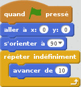
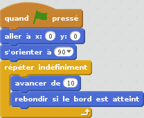

Scratch : initiation à l'algorithmique
TP2 : Les boucles
Mise en place
- Récupérez votre travail du tp1, sauvegardé dans le fichier TP1_exo1 : Fichier -> importer depuis votre ordinateur
- Sauvegardez votre travail dans le répertoire TP_Asteroides, dans un fichier nommé asteroides_TP2_exo1.
Déplacement du vaisseau
Pour le moment notre vaisseau se contente de se déplacer selon un circuit connu d'avance (un L ou un carré), ce qui n'est pas très intéressant pour un jeu vidéo. Nous allons permettre au joueur de déplacer le vaisseau à appuyant sur les touches directionnelles.
- Supprimez le programme du TP1 : clic droit -> supprimer
- Sélectionnez la catégorie de scripts Evènements
- Sélectionnez le bloc

Ce bloc possède un menu défilant qui liste une partie des touches du clavier. Celles qui nous intéressent sont :
- flèche haut
- flèche bas
- flèche droite
- flèche gauche
Lorsque l'utilisateur appuie sur une touche du clavier, les actions en dessous
du bloc s'exécutent. Par exemple avec le code suivant :

le personnage est placé au centre de la zone d'affichage puis avance
de 100 pixels, chaque fois que l'utilisateur appuie sur flèche haut.
Pour la suite de ce TP vous aurez égalements besoin des blocs du menu Mouvement. Comme vous avez déjà utilisé ces blocs dans le TP précédent, nous ne rappellerons pas leur comportement. Si vous avez un trou de mémoire, n'hésitez pas à consulter la colonne de droite.
Exercice 1
- Créez le programme permettant de positionner le vaisseau aux coordonnées (0,0) lorsque le joueur clique sur le drapeau vert
- Ajoutez les instructions nécessaires pour :
- déplacer le vaisseau vers le haut, quand le joueur appuie sur flèche haute ;
- déplacer le vaisseau vers le bas, quand le joueur appuie sur flèche bas ;
- déplacer le vaisseau vers la droite, quand le joueur appuie sur flèche droite ;
- déplacer le vaisseau vers la gauche, quand le joueur appuie sur flèche gauche.
- Sauvegardez votre travail dans le répertoire TP_Asteroides, dans un fichier nommé asteroides_TP2_exo1".
Exercice 2
Pour le moment, lorsque le joueur n'appuie sur aucune touche le vaisseau reste immobile. Nous allons modifier un peu ce comportement pour que:
- le vaisseau continue à avancer même quand le joueur n'appuie sur aucun bouton ;
- le vaisseau change de direction lorsque le joueur appuie sur l'une des flèches directionnelles ;
- le vaisseau rebondisse lorsqu'il touche un bord de la zone de jeu.
-
Analysez le programme suivant et expliquez comment le vaisseau va se déplacer :
 -
À votre avis, pourquoi le programme suivant est-il bien meilleur ?
 - Si ce n'est pas déjà fait, recopiez le programme précédent.
- Ajoutez les instructions nécessaires pour que le vaisseau change de direction lorsqu'une touche directionnelle est pressée
- Sauvegardez votre travail dans le répertoire TP_Asteroides, dans un fichier nommé asteroides_TP2_exo1".
Exercice 3
Maintenant que notre vaisseau se déplace et que l'utilisateur peut le contrôler, il est temps d'ajouter un peu de difficulté en créant des ennemis. Nous allons commencer par un premier type d'ennemi : une horrible soucoupe volante. Nous allons écrire le programme lui permettant de se déplacer.
- Téléchargez l'image suivante et enregistrez-là dans le répertoire Images_Asteroides :

- Dans Scratch, en bas de la zone d'affichage,
cliquez sur le bouton suivant :

- Sélectionnez l'image que vous venez d'enregistrer
A côté de notre vaisseau, en bas de la zone d'affichage, vous voyez apparaître un nouveau personnage qui correspond à la soucoupe volante. Bon d'accord, ce n'est pas vraiment une soucoupe, plûtot un vaisseau très moche. Mais rien ne vous empêche de choisir une autre image. Autre souci, tout le code précédent semble avoir disparu : pas de panique, vous pouvez le retrouver en cliquant sur l'image du vaisseau. En fait le code du vaisseau et le code de la soucoupe volante sont séparés. Pour écrire le code correspondant à la soucoupe volante, cliquez dessus.
- Sauvegardez votre travail dans le répertoire TP_Asteroides, dans un fichier nommé asteroides_TP2_exo3.
Vous allez maintenant écrire le programme permettant de déplacer en continu la soucoupe volante, dès que le joueur clique sur le drapeau vert.
- La première chose à faire est de réduire la taille de la soucoupe volante à 25% de sa taille initiale. Besoin d'aide ? C'est un bloc du menu Apparence qu'il vous faut utiliser...
- Ensuite, à l'intérieur d'une boucle infinie, placez les blocs pour :
- déplacer la soucoupe de 5 pixels ;
- le tourner de 1° dans le sens des aiguilles d'une montre;
- rebondir si un bord de la zone d'affichage est atteint.
Vous pouvez vous aider de l'exercice 2, qui est très similaire
- Sauvegardez votre travail dans le répertoire TP_Asteroides, dans un fichier nommé asteroides_TP2_exo3.